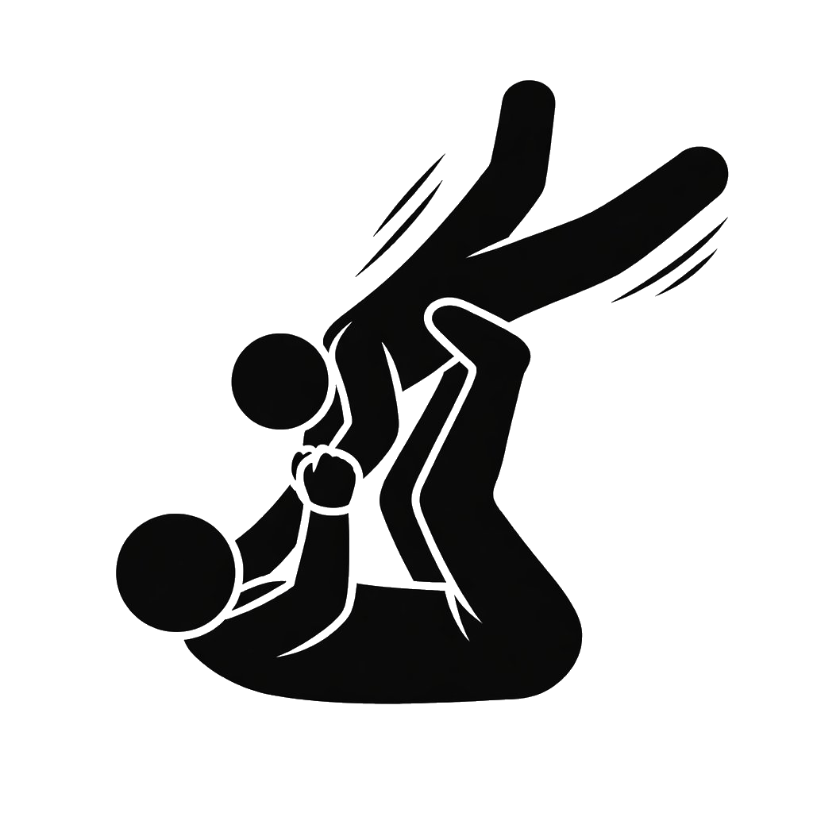
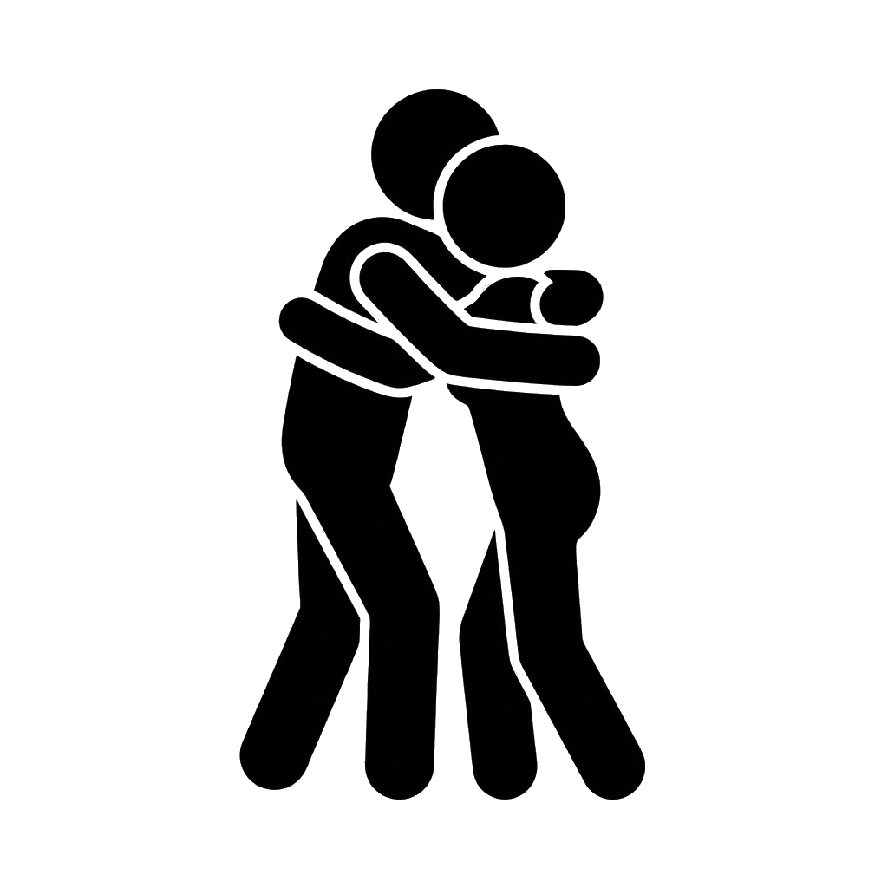
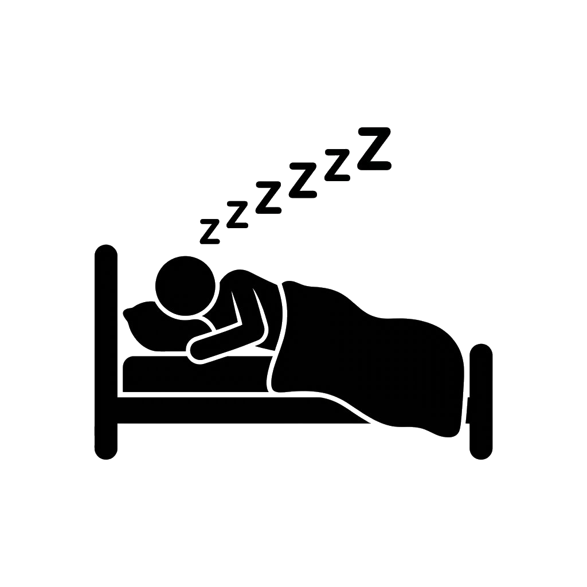

Quarteto da felicidade.
A dopamina é conhecida como o hormônio da recompensa e da motivação. Ela surge quando sentimos progresso, conquista ou prazer ao alcançar objetivos. Bons níveis de dopamina aumentam o foco, a energia e a vontade de agir. No cotidiano, é possível estimular a dopamina concluindo tarefas, aprendendo algo novo, organizando metas pequenas e comemorando avanços. Exercícios físicos, música e hobbies também contribuem para sua liberação. O segredo está em valorizar pequenas conquistas diárias.

A endorfina atua como um analgésico natural do corpo, reduzindo dores e trazendo sensação de prazer e relaxamento. Ela também ajuda no combate ao estresse e melhora o humor após momentos de esforço ou diversão. É liberada naturalmente durante exercícios físicos, risadas, dança, esportes, momentos divertidos e até ao ouvir músicas animadas. Atividades que movimentam o corpo e geram alegria são ótimas formas de aumentar a endorfina e promover bem-estar físico e mental.

A ocitocina é conhecida como o hormônio do vínculo e das relações humanas. Ela está ligada à sensação de confiança, carinho e pertencimento. Quando está em bons níveis, ajuda a reduzir o estresse, melhora o humor e fortalece conexões emocionais com outras pessoas. No dia a dia, é possível estimular a ocitocina de forma natural através de abraços, demonstrações de afeto, conversar com pessoas queridas, praticar atos de bondade e até interagir com animais de estimação. Pequenos momentos de proximidade já ajudam o corpo a liberar esse hormônio tão importante para o bem-estar emocional.

A serotonina está relacionada à sensação de calma, estabilidade emocional e bem-estar. Ela influencia diretamente o humor, a ansiedade, o apetite e principalmente a regulação do sono, pois participa da produção da melatonina, hormônio responsável por preparar o corpo para dormir. Para estimular a serotonina naturalmente, é recomendado tomar sol diariamente, manter uma alimentação equilibrada, praticar exercícios físicos e criar horários regulares para dormir e acordar. Ter uma rotina saudável ajuda o cérebro a equilibrar esse hormônio e melhora tanto a disposição quanto a qualidade do sono.